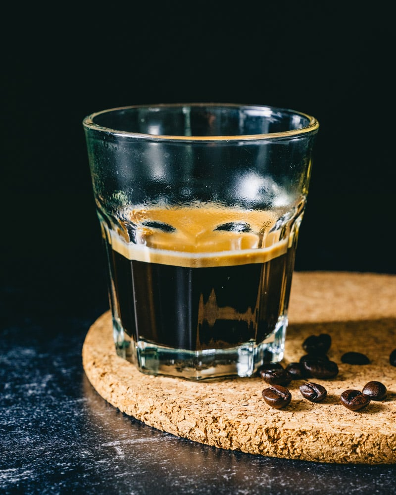

Espresso (with or without espresso machine)

Description
An espresso is a method in which to brew coffee and can be done
with or without an espresso machine. The espresso is shown
several times in Part 2 when Joseph is in Italy, and a coffee
variation called the Americano which uses espresso shots was
even shown when Joseph was in America.
Ingredients
- 18 to 20g medium to dark roasted beans
- Filtered Water
Steps using an espresso machine..
- Turn on your espresso machine and give it time to warm up.
- Once your machine is heated and you're ready to start
brewing, place your portafilter on the scale and tare
out the weight.
- Grind the coffee into your portafilter until you reach
your desired weight, 18 to 20g for a double shot.
- Even out the bed of coffee in your portafiliter,
either through a distribution tool or with your
index finger. The goal is to make sure the coffee is
level and evenly distributed across the whole basket.
- Use your tamper to compress your coffee down with a
fair amount of pressure. It's very important that you
tamp straight down in order to achieve an even puck.
If you tamp at an angle, the extraction of your coffee
will be compromised.
- Pull your shot and taste your coffee and determine if
you need to change any variables to improve the
quality of your cup.
Steps without an espresso machine (french press required btw tho..)
- Boil one cup of water.
- While you wait for the water to heat up, add two
tablespoons of freshly, finely ground coffee to your
French press.
- Add a bit of the boiling water to the French press and
stir briefly.
- Wait four minutes, then slowly push down the plunger,
pausing every few seconds until its all out. Note that
it'll be slightly challenging to push the plunger
down due to the grind size.